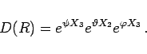

Inhalt Index DeskTop Bronstein

 Algebra und Diskrete Mathematik Klassische algebraische Strukturen Lie-Gruppen Infinitesimale Drehungen
Algebra und Diskrete Mathematik Klassische algebraische Strukturen Lie-Gruppen Infinitesimale Drehungen


Ein kartesisches Koordinatensystem (x,y,z) kann auch durch drei nichtvertauschbare Drehungen um die EULERschen Winkel  (s. Abbildung und Abschnitt EULERsche Winkel) in folgender Weise in ein Koordinatensystem (x',y',z') überführt werden:
(s. Abbildung und Abschnitt EULERsche Winkel) in folgender Weise in ein Koordinatensystem (x',y',z') überführt werden:
Die Knotenlinie K ist die Schnittgerade zwischen der x,y- und der x',y'-Ebene.

Bei Verwendung der EULERschen Winkel wird eine endliche Drehung dargestellt durch
|  | (5.142) |